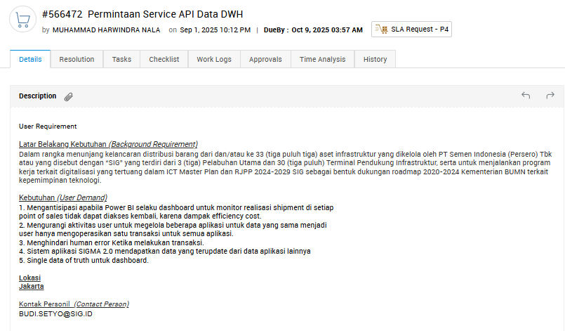
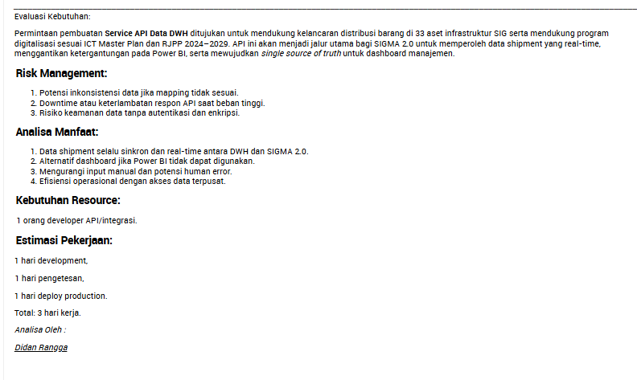
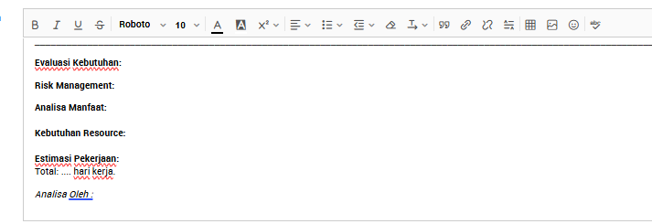
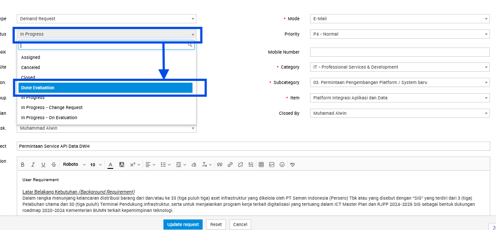
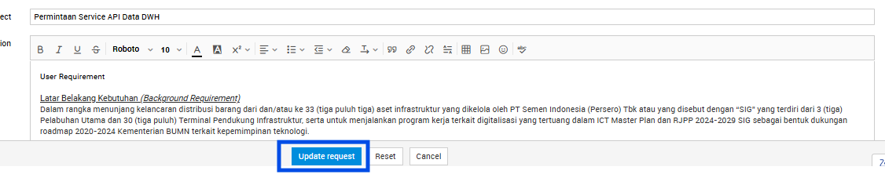
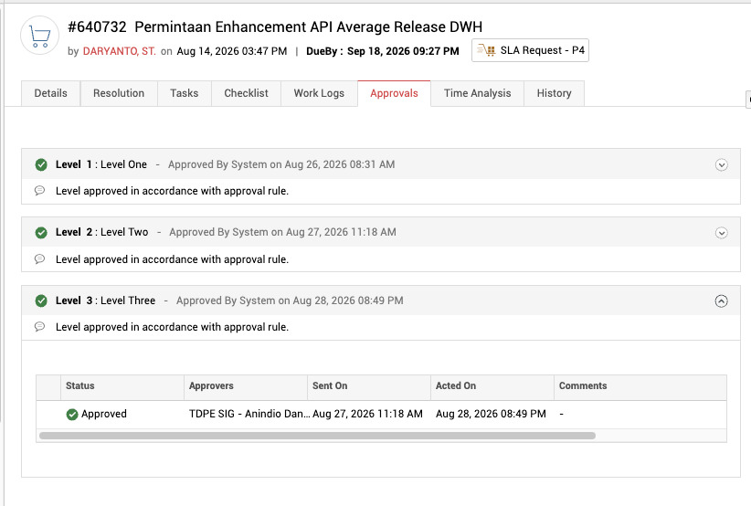
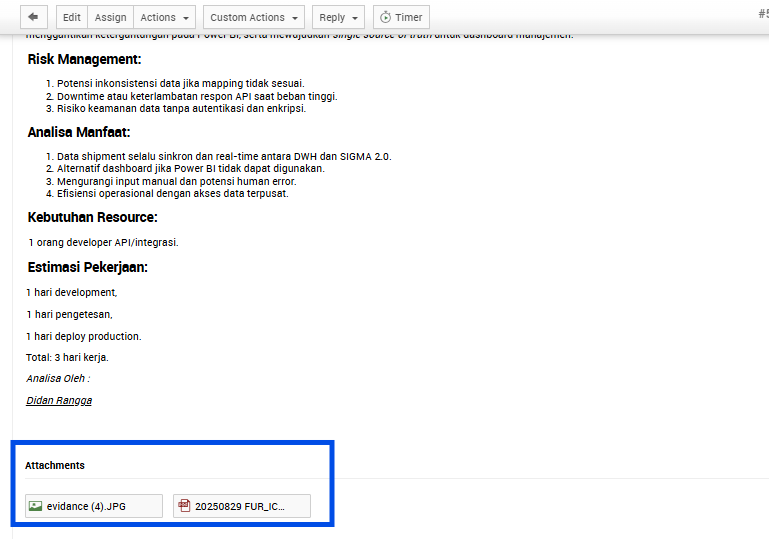
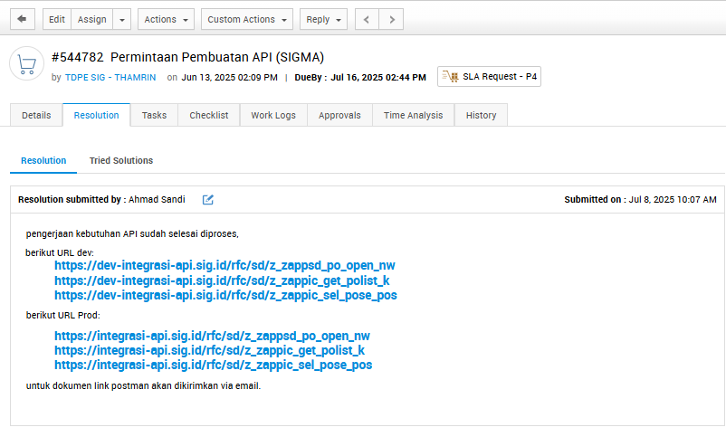
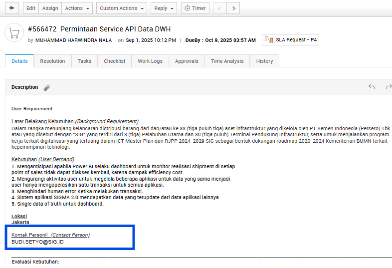
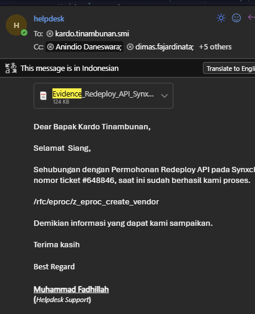

1.Ticket diterima

- Untuk mengetahui ada ticket baru, lihat pada pending request.
2.Cek deskripsi ticket & konfirmasi user

- Cek deskripsi ticket untuk memastikan permintaan terkait dengan project apa. Pastikan setiap rekan helpdesk mengerti maksud dan tujuan ticket tersebut.
- Setelah memahami maksud ticket, konfirmasi dengan User (PIC) yang bertanggung jawab untuk memastikan user mengetahui ticket tersebut. Khusus ticket API-AMP
- Jika user sudah mengetahui, tanyakan apakah evaluasi kebutuhan bisa dibuat secara langsung.
- Jika tidak bisa, tunggu konfirmasi dari User terlebih dahulu.
3.Buat evaluasi

Evaluasi kebutuhan diisi pada body ticket (di dalam deskripsi ticket). Biasanya sudah ada format dengan poin yang perlu diisi:
- aEvaluasi Kebutuhan
- bRisk Management
- cAnalisa Manfaat
- dKebutuhan Resource
- eEstimasi Pekerjaan
- fAnalisa Oleh
Cara mengisi evaluasi
Buka menu Edit pada ticket:
Kemudian isi evaluasi kebutuhan sesuai format yang diminta:

Note: jika tidak ada format seperti gambar di atas, isi sendiri berdasarkan contoh di bawah ini.
Contoh evaluasi kebutuhan
Evaluasi Kebutuhan:
Permintaan pembuatan Service API Data DWH ditujukan untuk mendukung kelancaran distribusi barang di 33 aset infrastruktur SIG serta mendukung program digitalisasi sesuai ICT Master Plan dan RJPP 2024–2029. API ini akan menjadi jalur utama bagi SIGMA 2.0 untuk memperoleh data shipment yang real-time, menggantikan ketergantungan pada Power BI, serta mewujudkan single source of truth untuk dashboard manajemen.
Risk Management:
- Potensi inkonsistensi data jika mapping tidak sesuai.
- Downtime atau keterlambatan respon API saat beban tinggi.
- Risiko keamanan data tanpa autentikasi dan enkripsi.
Analisa Manfaat:
- Data shipment selalu sinkron dan real-time antara DWH dan SIGMA 2.0.
- Alternatif dashboard jika Power BI tidak dapat digunakan.
- Mengurangi input manual dan potensi human error.
- Efisiensi operasional dengan akses data terpusat.
Kebutuhan Resource:
1 orang developer API/integrasi.
Estimasi Pekerjaan:
1 hari development,
1 hari pengetesan,
1 hari deploy production.
Total: 3 hari kerja.
Analisa Oleh:
KING ANGGA
Note: tulisan berwarna biru harus diedit sesuai kebutuhan pada isi/deskripsi ticket.
Belum bisa membuat evaluasi sendiri?
Gunakan ChatGPT sebagai alat bantu dengan prompt berikut:
Terdapat ticket Request baru terkait dengan kebutuhan ...............(isi pemahaman kita sesuai permintaan pada ticket), dengan deskripsi sebagai berikut : .................(isi full deskripsi ticket) Berikut adalah contoh evaluasi kebutuhan pada ticket sebelumnya : .................(isi full contoh evaluasi kebutuhan) Buatkan evaluasi kebutuhan sesuai dengan contoh evaluasi kebutuhan di atas berdasarkan dengan permintaan pada ticket request baru.
Note: kata kunci pada prompt ini ada pada ticket request baru dan contoh evaluasi kebutuhan. Tujuannya memberi batasan agar hasil yang didapat tidak melebar.
Setelah evaluasi selesai
Ubah statusnya menjadi done evaluation:

Kemudian update request:

4.Approval
Setelah evaluasi selesai dan status ticket berhasil dirubah menjadi done evaluation ticket akan di proses kembali oleh team ServiceDesk untuk di setting Approval atau persetujuan dari head departement terkait disisi SIG.
Contoh:

Notes: lampiran ada di bawah deskripsi ticket.
5.Technical confirmation
Setelah Done Evaluation dan Full Approval, langkah selanjutnya adalah konfirmasi detailrequest ticket ke team teknis: nomor ticket, subject, dan deskripsi ticket. Jika ada lampiran pada ticket, download dan kirimkan juga ke team teknis.
Contoh:

Notes: lampiran ada di bawah deskripsi ticket.
6.Resolved ticket (isi resolusi)
Jika kegiatan terkait permintaan pada ticket sudah selesai dilaksanakan, status ticket perlu di-resolved.
Template ticket AMP
Pengerjaan kebutuhan API sudah selesai diproses.
Berikut URL dev:
- DEVhttps://dev-integrasi-api.sig.id/rfc/sd/z_zappsd_po_open_nw
- DEVhttps://dev-integrasi-api.sig.id/rfc/sd/z_zappic_get_polist_k
- DEVhttps://dev-integrasi-api.sig.id/rfc/sd/z_zappic_sel_pose_pos
Berikut URL Prod:
- PRODhttps://integrasi-api.sig.id/rfc/sd/z_zappsd_po_open_nw
- PRODhttps://integrasi-api.sig.id/rfc/sd/z_zappic_get_polist_k
- PRODhttps://integrasi-api.sig.id/rfc/sd/z_zappic_sel_pose_pos
Untuk dokumen link Postman akan dikirimkan via email.

Note: jumlah URL yang dicantumkan tergantung total endpoint yang dikerjakan. URL diambil melalui file JSON dari tim Synxchro.
Ubah status menjadi resolved
Setelah resolution terisi, ubah statusnya menjadi resolved.

7.Kirim email ke requestor
Khusus ticket AMP Kirim file JSON yang diterima dari tim Synxchro ke user.
- Email user tertera pada body ticket:

Template email

- Subject
- Notification/(nomor ticket)/(judul ticket)/(status ticket)
Dear Bapak/Ibu .........(sesuaikan nama dan panggilan user),
Sehubungan dengan (judul ticket) dengan nomor ticket (nomor ticket), dapat kami informasikan bahwa pengerjaan API telah selesai diproses.
Berikut kami lampirkan juga file Postman.
Terima kasih.
Best Regards,
(nama pengirim)
Notes:
- Email dikirim ke requestor sesuai data pada ticket.
- Cantumkan King Kardo pada CC.
- Lampirkan file Postman/JSON sesuai yang diterima dari tim Synxchro.